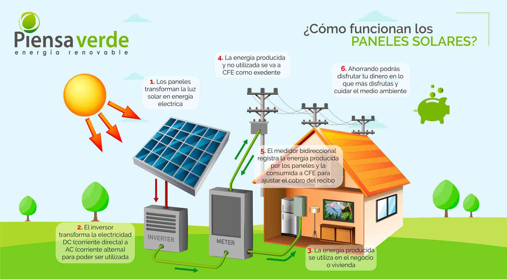

| Inicio | Energía Solar | Energía Eólica | Energía Hidráulica | Beneficios | Mis datos |
| ¿QUÉ ES LA ENERGÍA SOLAR? |
|---|
| La energía solar es una fuente de energía renovable que se obtiene a partir de la radiación del Sol. Es una de las energías limpias más utilizadas en el mundo porque no produce contaminación durante su aprovechamiento y contribuye al cuidado del medio ambiente. |
| ¿CÓMO FUNCIONA? |
|---|
| Los paneles solares captan la luz del Sol y la transforman en electricidad o calor. Esta energía puede utilizarse en hogares, escuelas, hospitales, empresas y muchos otros lugares para satisfacer diversas necesidades. |

| VENTAJAS Y DESVENTAJAS | |
|---|---|
| Ventajas | Desventajas |
|
|
| DATOS GENERALES | |
|---|---|
| Fuente | Sol ☀️ |
| Tipo | Energía Renovable |
| Contaminación | Muy baja |
| Uso principal | Generación de electricidad |

| DATO INTERESANTE |
|---|
| En una sola hora, el Sol envía a la Tierra más energía de la que toda la humanidad consume en un año. Por esta razón, la energía solar es considerada una de las mejores alternativas para el futuro. |
| ENLACE DE INTERÉS |
|---|
| Conoce más sobre la energía solar |